Menu de criação e consulta de Atendimentos da plataforma.
Atenção
Menu em desenvolvimento, é possível que existam mudanças recentes na plataforma.
Configuração
Para que seja possível realizar os registros de atendimento na plataforma, serão necessários alguns passos de configuração.
Configurando produtos de atendimento
Após a criação dos produtos, indicar que sua característica é de atendimento:
No menu Configurações, acesse Produtos do contrato e siga os passos:
Clique no produto:
Selecione o campo "Característica do produto" como "Atendimento":
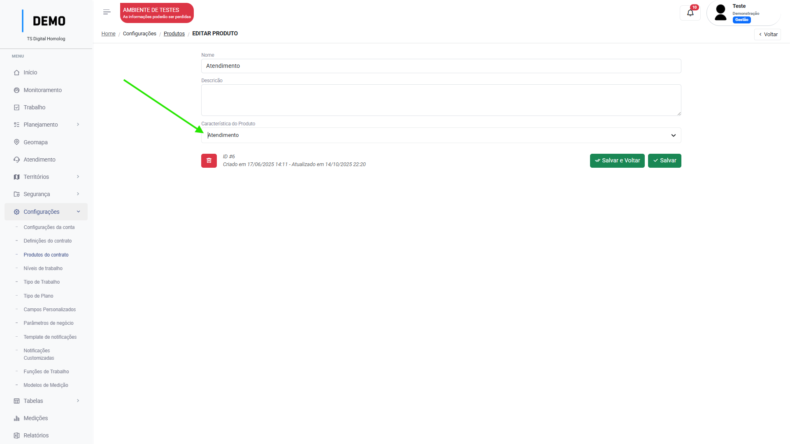
Clique em "Salvar".
Crie uma Ordem de serviço e inclua o produto com a característica de "Atendimentos":
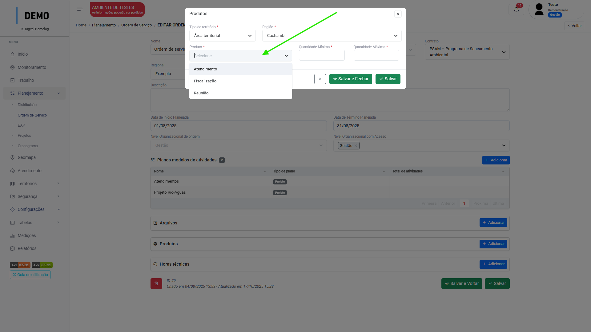
Este passo é necessário pois em todo registro de atendimento será obrigatório a seleção de uma ordem de serviço. No campo de seleção, só aparecerão listadas as ordens de serviços que possuírem produtos inclusos com a característica de atendimentos.
Configurando Tabelas
Os campos de preenchimento dos atendimentos mudarão a partir do tipo de atendimento selecionado no registro, para que os campos de seleção exibam as informações corretas, as tabelas devem ser configuradas.
Campos que são configurados no menu Tabelas:
Campo
Tipo de atendimento
Motivo do atendimento
P4, P6
Canal de atendimento
P4
Situação do atendimento habitacional
P5
Motivo do atendimento
No menu Tabelas → Motivos de atendimento clique em "Adicionar":
Após inserir o "nome" do valor, ative o switch "exibir apenas para novos atendimentos":
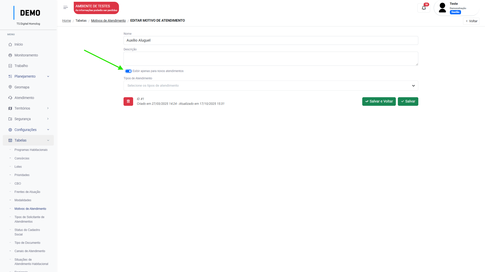
Selecione em qual tipo de atendimento este motivo deve aparecer (P4 ou P6):
Clique em "Salvar".
Pronto! Agora esse valor foi inserido como uma opção de seleção no campo de "motivo do atendimento":
Canal de atendimento
No menu Tabelas → Canais de atendimento clique em "Adicionar":
De um nome para o canal e clique em "Salvar".
Pronto! Agora esse valor foi inserido como uma opção de seleção no campo de "Canal de atendimento":
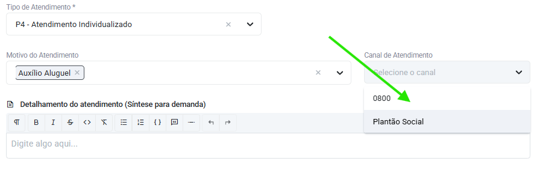
Situação do atendimento habitacional
No menu Tabelas → Situações de atendimento habitacional clique em "Adicionar":
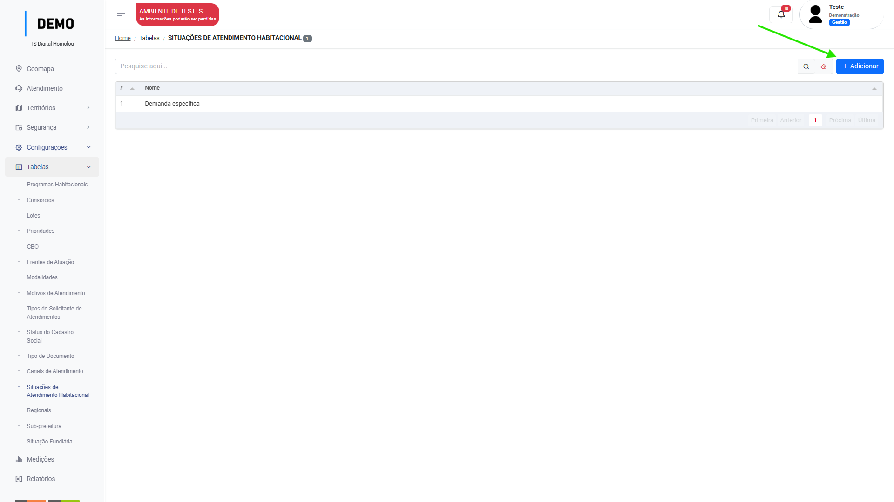
De um nome para a situação e clique em "Salvar".
Pronto! Agora esse valor foi inserido como uma opção de seleção no campo de "Situação de atendimento habitacional":
Visualização
O menu conta com três filtros padrões para visualização:
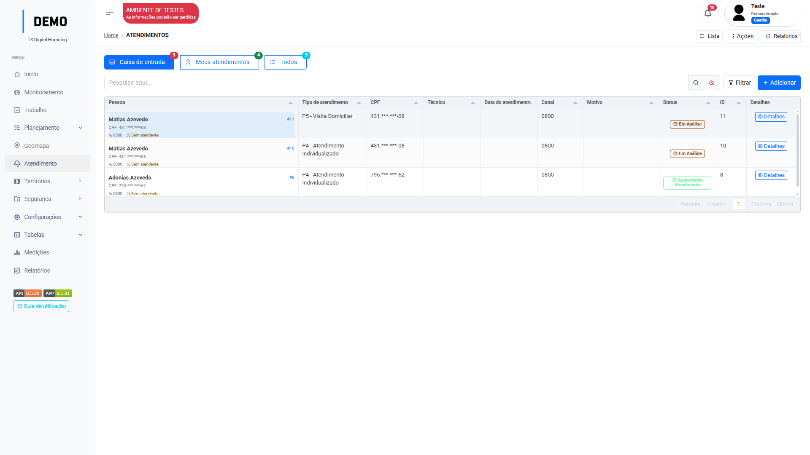
Lista os atendimentos sem atendentes atribuídos.
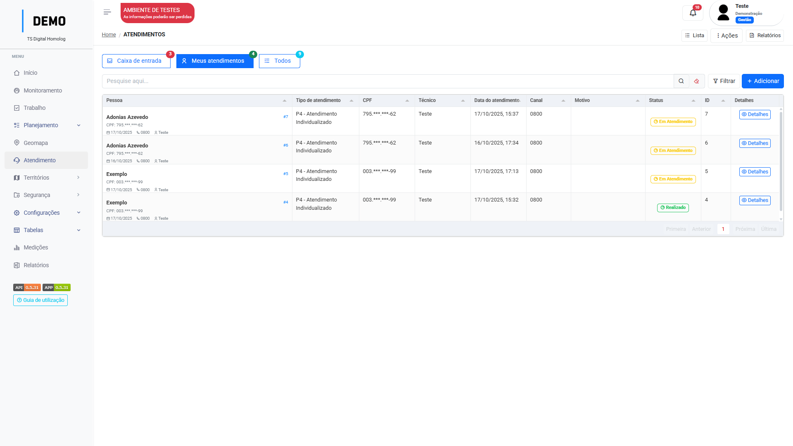
Lista apenas os atendimentos que o usuário possui como atendente.
Lista todos os atendimentos.
O usuário pode escolher também a visualização em lista ou calendário:
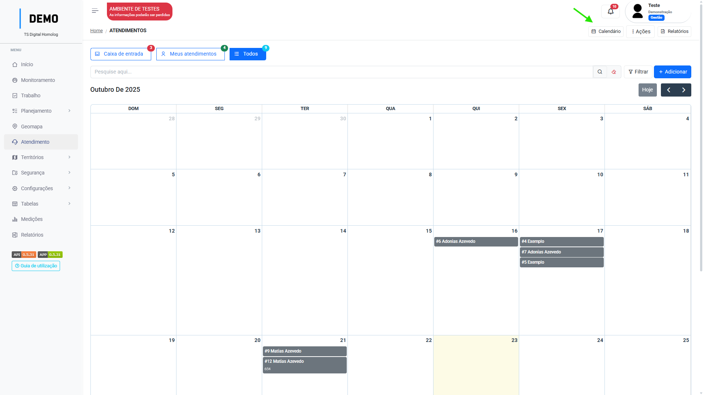
Como registrar um atendimento
Atendimento Individualizado (P4)
No menu Atendimentos, clique em "Adicionar":
Selecione a ordem de serviço qual o atendimento pertence.
Selecione a pessoa que será atendida ou clique em "Adicionar" caso ela não esteja cadastrada na plataforma.
Dica
Busque pelo nome ou pelo CPF.
Selecione o território qual o atendimento pertence:
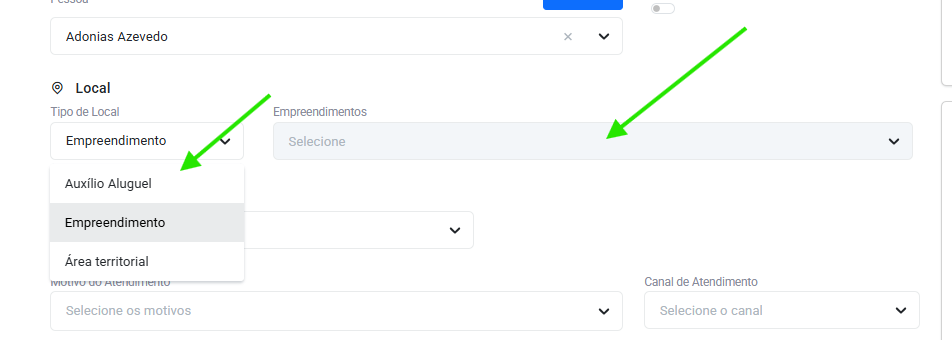
Selecione a opção "P4 - Atendimento individualizado":
Selecione o motivo e o canal de atendimento:
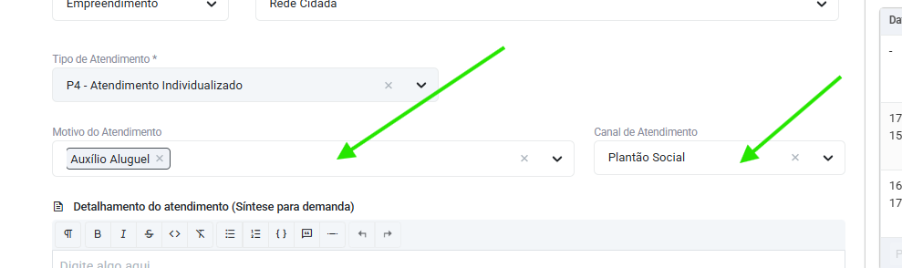
Digite o detalhamento(síntese) e as providências(encaminhamentos) do atendimento:
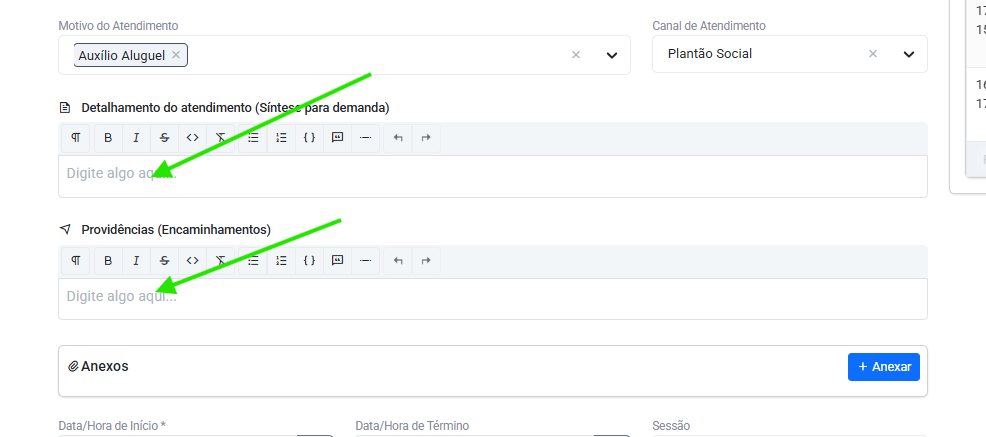
Selecione a data/hora início:
Salve as informações:
Nota
Após salvar, o usuário ainda pode editar as informações do atendimento caso tenha de editar algum campo
O atendimento agora será concluído e não será possível editar as informações.
Anexos
É possível anexar arquivos nos atendimentos independente do tipo de atendimento selecionado.
Clique em "Anexar" na seção de Anexos do atendimento:
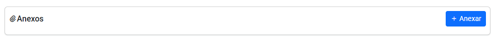
Selecione o arquivo:
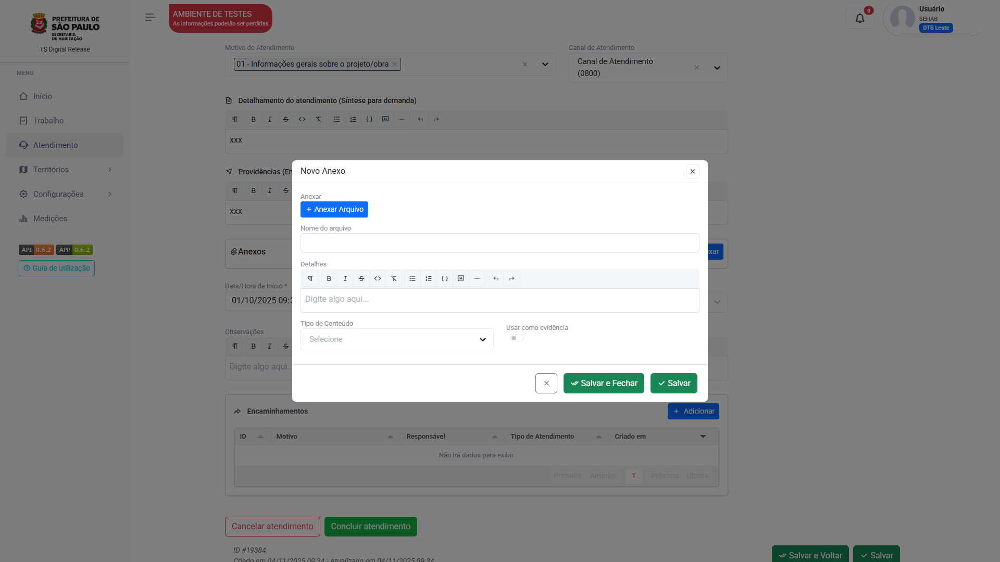
Selecione o tipo de conteúdo que está anexando(obrigatório):
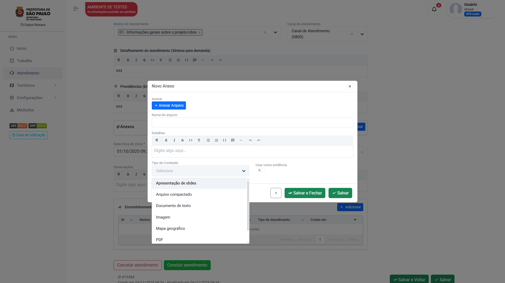
Caso estes anexos devam ser extraídos na geração da medição, ative o switch "Usar como evidência".
Clique em "Salvar".
Encaminhamentos
Os encaminhamentos são atendimentos gerados por consequência de outro atendimento. Para criá-los, deve-se ir até a seção de "Encaminhamentos" do atendimento. Essa seção só aparecerá uma vez que o atendimento for salvo.
Clique em "Adicionar":
Selecione o tipo e o motivo de atendimento que será encaminhado:
Para os casos de P5 e P6, selecion a origem da demanda e escreva uma justificativa para o encaminhamento:
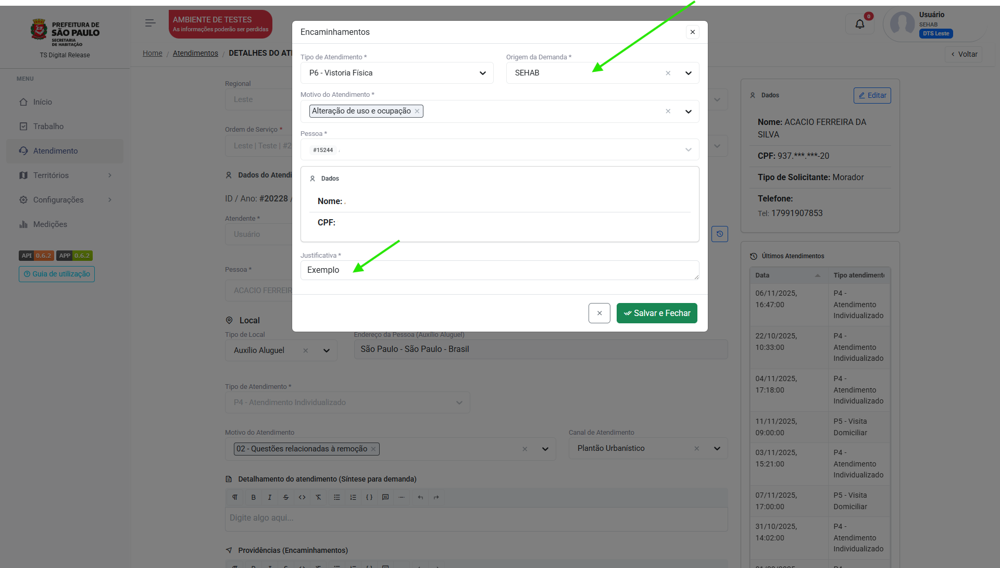
Após preencher, clicar em "salvar e fechar" e salvar o atendimento.
O atendimento encaminhamento irá para a "caixa de entrada" do menu atendimento, para que um usuário assuma o atendimento:
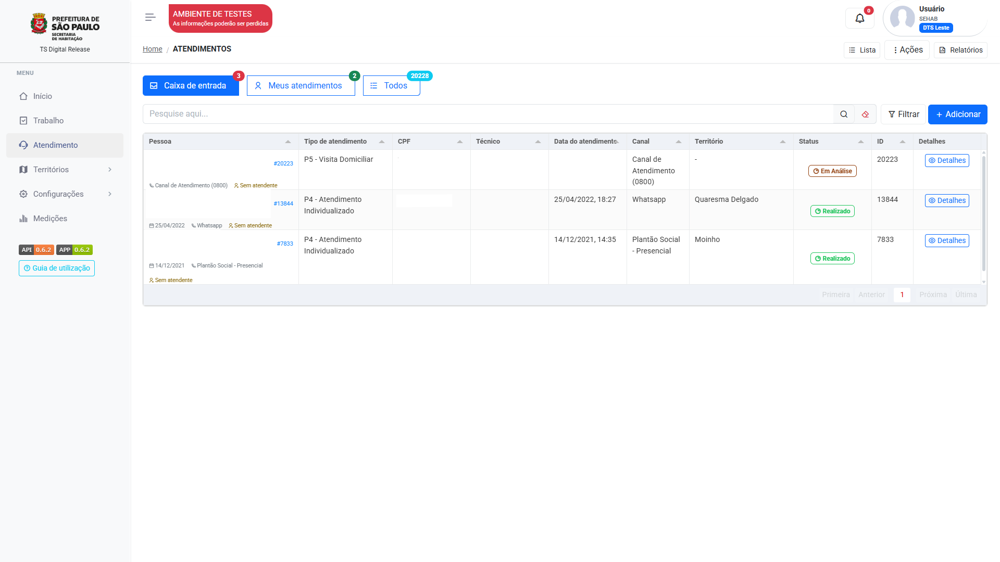
Para assumir o encaminhamento, vá para a "caixa de entrada", acesse o atendimento e clique em "Prosseguir atendimento":